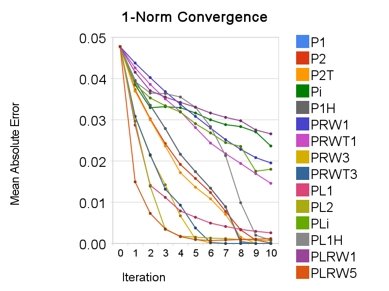
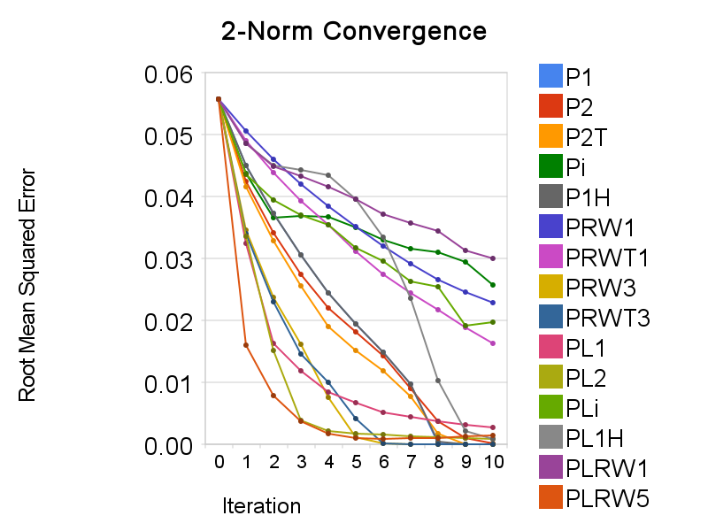
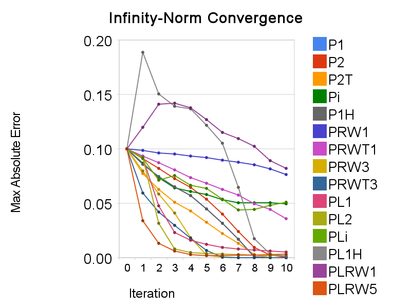

=======================================
没想到在我没有加任何文字说明的情况下，这个帖子竟然在阅读数上列第一。 这也能看懂？我还是解释一下好了。这里所要探讨的是不同范数下的点云对齐问题。
ICP是Iterative Closest Point的缩写，更一般地也可以作为Iterative Corresponding Point的缩写，是处理点云对齐（或称点云匹配、配准，英语Pointcloud Registration）问题的方法。关于点云对齐和ICP，先上一些参考文献：
[1] Paul J. Besl and Neil D. Mckay. A method for registration of 3-d shapes. IEEE Transactions on Pattern Analysis and Machine Intelligence, 14(2):239–256, 1992.
[2] Yang Chen and Gérard Medioni. Object modelling by registration of multiple range images. Image Vision Comput., 10(3):145–155, 1992.
[3] Szymon Rusinkiewicz and Marc Levoy. Efficient variants of the ICP algorithm. In Third International Conference on 3D Digital Imaging and Modeling (3DIM), 2001.
[4] Timothée Jost. Fast Geometric Matching for Shape Registration. PhD thesis, Université de Neuchâtel, 2002.
[5] Helmut Pottmann, Qi-Xing Huang, Yong-Liang Yang, and Shi-Min Hu. Geometry and convergence analysis of algorithms for registration of 3D shapes. Int. J. Computer Vision, 67(3):277–296, 2006.
再上一篇最新的，其中探讨了1范数在曲面拟合和点云对齐中的应用。我就是看了这篇，有了写这个帖子的想法。
[6] S. Flöry and M. Hofer. Surface Fitting and Registration of Point Clouds using Approximations of the Unsigned Distance Function. Computer Aided Geometric Design (CAGD), 27(1): 60-77, 2010.
这些文章在谷歌上就可以搜到并下载，不需要任何商业数据库。
在点云对齐中，每个点到对齐目标都存在偏差，所有的偏差可组成一向量，不妨称作偏差向量。最常规的想法就是使偏差的平方和最小，如使用最小二乘法解回归问题，以前对点云对齐问题就是如此处理。用向量范数的语言来讲，这也就是令偏差向量的2范数最小。那么探讨其它范数的意义何在呢？基于1范数的优化有更好的稳健性，可以参看维基中的“Least absolute deviations”词条和文献[6]。而无穷大范数指示的是最大偏差绝对值，有重要的意义，例如在形位公差的评价中。
点到对齐目标的偏差有两种常用的评价方法：点到对应点的距离和点到对应点的切平面的距离。后一种通常有更快的收敛速度，但需要切平面的信息。在以点到点的距离为偏差评价的情形，基于1范数和无穷大范数的优化可转化为二次锥规划(Second-Order Cone Programming，SOCP)问题。而在以点到点的距离为偏差评价的情形，基于1范数和无穷大范数的优化可转化为线性规划(Linear Programming，LP)问题。文献[6]中有将基于1范数的优化进行转化的方法，而这方法很容易应用到无穷大范数的情况。之所以要这样转化，将无约束优化问题转为约束优化问题，我理解这是为了光滑性。原本基于1范数和无穷大范数的优化是非光滑的，转化后则成为光滑的约束优化问题。尽管增加了变量数，又加上了约束，但这都是值得的，可见光滑性在优化中有多重要。此外，我还实现了另两种方法：基于1范数的优化还有一种近似的解法，就是使用Huber函数来作1范数的近似，然后用LBFGS来求解这一优化问题；而对于更一般的基于p范数优化，可以用IRLS方法来近似求解。
我的开发环境是gVim+TDM-MinGW。各种工具包的选取如下，矩阵处理用的是Eigen，最近点搜索使用ANN，LP求解使用Glpk for Windows。SOCP求解似乎只有商业化工具，我试了一下Mosek，不过它给出的解真是诡异，可能是我的能力还不够吧。试了几种方法之后，还是用了一种笨办法：将SOCP转为SDP(Semi-Definite Programming，半正定规划)，将相关数据写出为sparse SDPA格式的文件，再调用CSDP来求解。基于Huber函数的优化中用的LBFGS方法采用的是libLBFGS。是如果在Matlab下，问题就会简单些(推断，我也没实际验证)，矩阵处理自不必说。最近点搜索方面，ANN依然可用(ANN MATLAB Wrapper)，我还用过这个。优化方面，Matlab本身就可解LP，而SOCP可用SeDuMi。
用一个小点云(约1400点)做了下测试，谈不上验证了什么。考虑了三种范数，所以有三张收敛图。作为纵座标的指标，1范数用的是平均绝对误差，2范数用的是均方根误差，无穷大范数用的是最大绝对误差(也就是无穷大范数本身)。图中各种方法名称的意义如下：
分为两大类，以P 开头的表示以点到点的距离为偏差评价方法，而以PL 开头的表示以点到平面的距离为偏差评价方法。后面的符号中，1表示1范数，2表示2范数，i表示无穷大范数，1H表示使用Huber函数近似的1范数，RW(Re-Weighted)表示用IRLS计算p范数优化，RW后跟的数字就是p的值。此外，以P 开头的方法中还有2T和RWT两种变体，它们在求解最优变换时不是采用的闭合解方法，而是像以点到平面的距离为目标时使用的无穷小变换(也就是用切空间，所以用T来标明这类变体)。其实倒不如说P2和PRW两个是另类，因为只有它们有闭合解方法。



然后是看图说话。基于1范数的优化是为了稳健性而提出的，但是计算量是个大问题。如果只是为了稳健性，使用加权的最小二乘法可能更好，因为不仅更快也更灵活。而使用Huber函数来近似1范数正是为了减少计算量。在以点到点的距离为偏差评价的情况下，实验显示这一方法很成功，两者的收敛曲线是重合的(在图上找不到P1的曲线，因为它正好被P1H的给盖住)。但在以点到平面的距离为偏差评价的情况下，两者的收敛曲线不一致，而且PL1H的收敛比较糟糕，LBFGS搜索几乎都不成功。具体的原因我不清楚，不过我推测还是光滑性不够。基于无穷大范数的优化收敛速度则实在太慢。它对于对应性的要求应是很高的。在点云和目标距离还比较大时可以考虑先采用2范数进行迭代，后面再使用穷大范数。最后，很有趣的一点，在基于IRLS的p范数优化中，使用高于2的p值常能获得比2范数优化更快的收敛速度。PRW3就明显快于P2，而PLRW5更是在前几个迭代步一骑绝尘，远超其它方法。不过PLRW5稳定性不够，最后没能收敛到0，而且之所以用5而不是3或4，正是这两种稳定性太糟。采用加权的ICP，以前的文献，如[3,4]中也介绍过了，但其中的加权方法大抵是对匹配性更好的点对以较高的权值。可在基于IRLS的p范数(p>2)优化中则相反，对匹配性较差的点对(点之间距离更大者)以较高的权值。而实验显示这样可以加速收敛，但会减少稳定性。其中的原理我觉得可以这样解释：匹配性较差的点更需要改善其匹配性，使用较高的权值可以令这些点更快地接近目标曲面，从而更快地改善匹配性；另一方面，利用匹配性较差的点对计算的最优变换可能是不“正确”的，进而使整个算法的结果不能正确地收敛。这说明在权值的选取上其实是存在着一个速度与稳定性的权衡，而这一点似乎前人并未提到。